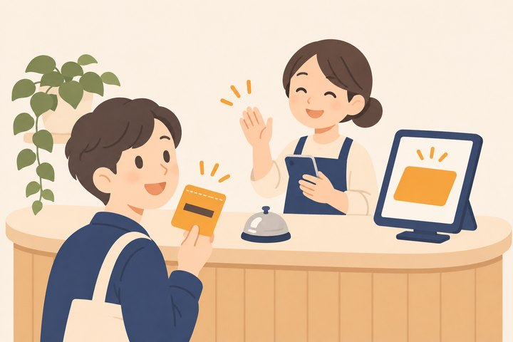

iPhone・iPad・Android 向け・順番待ちの受付と呼び出し
番号札を出して、
次の人を呼ぶ。
混む時間の受付で、紙の整理券を切って、ホワイトボードに番号を書いて、大きな声で呼ぶ。「よびだしボード」は、それをスマホ1台に置きかえるアプリです。番号を出す、次の人を呼ぶ、来なかった人を飛ばす。お客様には、近くの iPad や使っていない iPhone、テレビに「ただいまの呼び出し」を大きく出せます。
App Store・Google Play で見る（準備中）買い切りの有料アプリです。一度買えば、すべての機能が使えます。アカウント登録・アプリ内課金・サブスクリプション・広告はありません。

こんな困りごとのために作りました
アカウントが作れない・ログインできない
登録もログインもありません。開いたらその場で受付を始められます。お店の名前と窓口の数を決めるだけです。
2台目の画面と番号がそろわない
受付のスマホと、お客様向けの画面（iPad・iPhone）を、近くの端末どうしで直接つなぎます。サーバーを通さないので、ネットが無い場所でも動きます。正しい番号はいつも受付の端末にあり、表示の端末はそれを映すだけです。切れたら自動でつなぎ直します。
済んだ人が一覧に残り続ける
済んだ人・来なかった人・取り消した札は、待ちの列から外れます。数と時刻は記録に残るので、あとで何人に対応したかが分かります。
待ち時間の目安がずっと同じ
実際に呼んだ間隔から1人あたりの時間を出し、呼ぶたびに出し直します。窓口が2つなら、そのぶん短くなります。
大きな声で呼ぶのがたいへん
呼ぶとチャイムが鳴り、「A 12番のお客様、1番窓口へお越しください」と読み上げます。日本語・英語・両方から選べます。もう一度呼ぶことも、来なかった人を飛ばすこともできます。
押しまちがえた
番号を出しすぎた、ちがう人を呼んだ。そんなときは［前に戻す］で、最後の操作を1つ戻せます。
できること
| 番号を出す | 番号は1から順に（始まりの番号と頭の文字 A〜Z を決められます）。名前と人数は入れても入れなくても |
|---|---|
| 呼ぶ | 窓口ごとに［次の人を呼ぶ］。待ちの列から好きな人を呼ぶ・呼び直す・来なかった・取り消す・前に戻す |
| 窓口 | 1〜10。名前と色を決められます |
| お客様向けの表示 | ただいまの呼び出し番号（窓口ごと）・お待ちの組数・目安の時間・次に呼ぶ番号・お店の一言。同じ端末で開く／近くの iPad・iPhone につなぐ／AirPlay や HDMI でつないだテレビに出す。縦でも横でも |
| 知らせ方 | チャイムと読み上げ（日本語・英語）。読み上げる端末（受付・表示・両方）を選べます |
| 記録 | 日ごとの発行・済み・来なかった・取り消し・平均の待ち時間・時間帯ごとの人数 |
| そのほか | 設定のロック（Face ID・パスコード。お客様が触っても設定を変えられない）・6色のテーマ・iPad と iPhone Duo の広い画面では、呼んでいる番号と待ちの列を左右に並べます |
受付の記録は端末の中だけに置きます。お客様の名前は、受付を締めると消えます。くわしくはプライバシーポリシーへ。